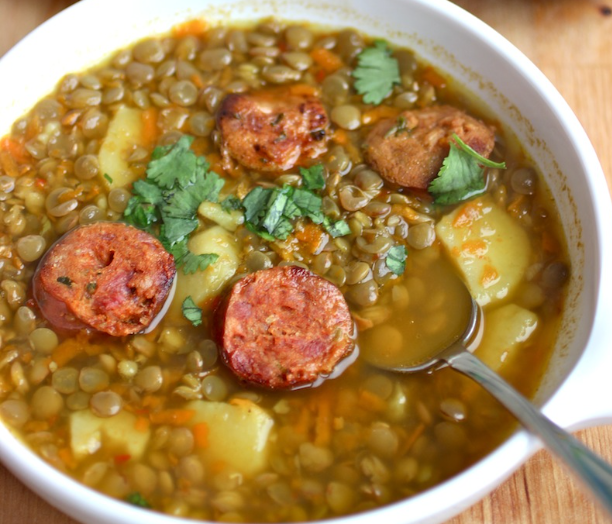

Colombian Lentils Soup

This is a very substantial soup that would make a comforting meal-in-a-bowl served with avocado and white rice. This lentil soup recipe is very easy to make, a wonderful weeknight meal. This soup is made with potatoes, vegetables, spices, herbs and chorizo, but you can omit it or add beef or pork instead.
To store this lentil soup, place leftover soup in an airtight container in the refrigerator for up to 3 days. If you want to freeze it, store soup in an container in the freezer for up to 1 month. Be sure the container is freezer friendly. When you are ready to use it thaw overnight in the fridge or before reheating.
Ingredients
- 1 teaspoon vegetable oil
- 1 cup chorizo sliced
- 1/2 cup chopped onion
- 2 garlic cloves minced
- 1/2 cup chopped scallions
- 1/2 cup chopped tomatoes
- 1/4 teaspoon cumin
- 5 cups water
- 1 1/2 cup dried lentils
- 1/4teaspoon salt
- 1/2teaspoon pepper
- 1/2 cup grated carrots
- 1/2 cup potato cut into bite-sized pieces
Instructions
- Cook the chorizo in the oil in a large pot over medium heat, stirring occasionally, about 5 minutes. Using a slotted spoon, transfer the chorizo to a plate lined with paper towel.
- Add the carrots, onion, garlic, tomato and scallions to the pot, season with salt and pepper. Cook stirring occasionally about 12 minutes. Stir in the cumin and cook 1 more minute.
- Add the lentils and water, bring to a boil. Then reduce the heat to medium low, cover and cook until the lentils become tender but not mushy about 45 minutes.
- Add chorizo and potatoes, cook for 15 to 20 minutes until the potatoes are fully cooked and fork tender, thin with water if necessary. Ladle into soup bowls and top with cream if using and serve immediately.